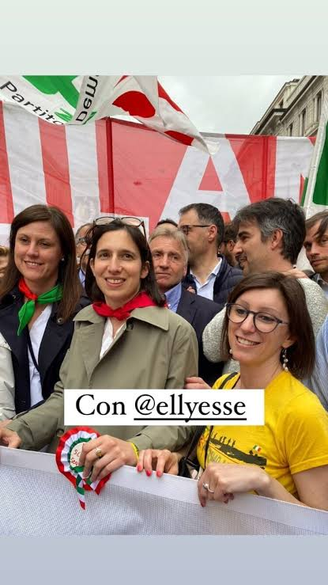
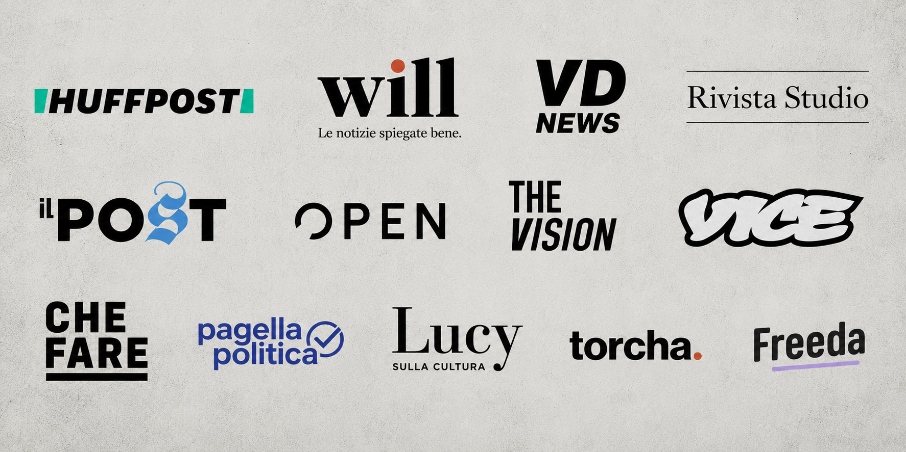

Non è vero che la sinistra contemporanea "non parla più a nessuno".
Parla continuamente.
Il problema è che quasi tutta questa comunicazione non produce organizzazione, coscienza collettiva, conflitto sociale o trasformazione materiale.
Produce pubblico, reputazione individuale, opportunità professionali, campagne pubblicitarie e comunità di consumatori culturalmente omogenei.
La sinistra novecentesca aveva partiti, sindacati, sezioni territoriali, cooperative, case del popolo, circoli culturali, quotidiani, riviste teoriche, scuole politiche e organizzazioni popolari. Naturalmente era attraversata da gerarchie, dogmatismi ed errori enormi, ma aveva un'ambizione: formare le persone e conquistare potere collettivo.
La nuova sfera progressista-woke-performativa digitale possiede invece un'enorme capacità di rappresentazione e una scarsissima capacità di concretezza e trasformazione sociale.
Sa spiegare in sessanta secondi perché una parola è problematica, ma non sa organizzare un quartiere; sa produrre un podcast sulla precarietà, ma raramente mette in discussione il sistema economico che finanzia il podcast; parla in nome delle minoranze, dei giovani, dei lavoratori e delle periferie, ma spesso è composta da professionisti urbani che competono per contratti editoriali, consulenze, collaborazioni aziendali e visibilità.
Non è semplicemente "una sinistra più stupida".
È una sinistra sottoposta a un diverso sistema di incentivi.
Gli algoritmi premiano riconoscibilità, semplificazione, antagonismo, emozione e continuità della pubblicazione, non la profondità o la coerenza politica. Una ricerca recente sulla logica delle piattaforme mostra, per esempio, che alcuni ambienti digitali ricompensano maggiormente antagonismo e tossicità rispetto a rispetto e sfumatura; altri studi hanno documentato la formazione di comunità separate, nelle quali gli utenti consumano prevalentemente contenuti coerenti con le proprie convinzioni.
La leader perfetta per l'era dei social
Elly Schlein rappresenta probabilmente il punto più alto della trasformazione estetica della sinistra italiana.
È giovane, comunica perfettamente sui social, appartiene alla comunità LGBTQ+, parla il linguaggio delle nuove generazioni ed è diventata, anche simbolicamente, il volto di una nuova stagione progressista.
Eppure proprio qui emerge una delle più grandi contraddizioni della sinistra contemporanea. Mentre gran parte della sua comunicazione ruota attorno all'identità e all'estetica "di sinistra", sulle grandi questioni geopolitiche il Partito Democratico continua a votare come Giorgia Meloni.

Sul sostegno militare all'Ucraina e il riarmo europeo, sull'aumento delle spese per la difesa e, in più occasioni, sulle principali scelte di politica estera, la distanza dal "governo fascista" è stata molto meno radicale di quanto la comunicazione politica del PD lasci intendere.
È il paradosso della sinistra dell'algoritmo: cambiano i volti, cambiano le grafiche, cambiano i reel e i caroselli, ma sulle decisioni che determinano davvero gli equilibri internazionali il margine di conflitto con l'establishment non è pervenuto.
Con la leadership della Schlein, la comunicazione dà l'impressione di una rivoluzione "femminista e LGBTQI+". La politica reale restituisce molto più spesso un'impressione di continuità sistemica con le politiche di estrema destra.
Le piattaforme dell'informazione progressista aziendale (sono migliaia, prendo solo alcuni esempi utili).
Will Media si presenta come una voce guida per Millennials e Gen Z e dichiara milioni di follower sulle proprie piattaforme. Dal 2022 è unita a Chora Media in un polo editoriale digitale che realizza anche progetti sostenuti da aziende e associazioni; accanto ai contenuti editoriali offre membership, eventi e attività di community.
Questo non prova che i contenuti WILL siano falsi o privi di valore. Il punto critico è un altro: può un soggetto che vive strutturalmente dentro l'economia delle aziende, delle partnership e del personal branding costruire una critica radicale del sistema che lo sostiene?
Il risultato è spesso un progressismo pedagogico e compatibile, che descrive i problemi del capitalismo come una raccolta di innovazioni, comportamenti individuali, buone pratiche e opportunità di partecipazione.

VD News si definisce un media di informazione e intrattenimento, ma anche una casa di produzione che sviluppa contenuti commerciali ed editoriali per le aziende. Anche in questo caso, il problema non è l'esistenza della pubblicità, comune a moltissimi media, ma la progressiva indistinguibilità tra informazione, intrattenimento, posizionamento morale e comunicazione commerciale.
Rivista Studio appartiene a Most Media Group insieme a Undici e si colloca dichiaratamente nell'incrocio tra attualità, cultura, lifestyle e moda. Non è una piattaforma pedagogica per giovani, ma rappresenta bene la trasformazione della cultura in stile di vita e trend. La politica vi entra spesso come fenomeno estetico o generazionale, più che come scontro materiale tra interessi e classi opposte.
Scomodo è nato nel 2016 dichiarando una volontà di cambiamento sociale e culturale, ha costruito comunità fisiche in più città e continua a rivendicare una dimensione territoriale, non soltanto digitale.
Allo stesso tempo, il progetto è diventato una "community company", ha avviato un equity crowdfunding e nel 2025 ha ricevuto un investimento di 200.000 euro dalla Fondazione Charlemagne.
Questa è una contraddizione più interessante del solo "essere democristiani": che cosa succede quando una realtà nata per costruire autonomia culturale deve trasformare partecipazione, comunità e socialità in un modello economicamente scalabile? Scomodo potrebbe diventare il caso di studio del passaggio dal collettivo alla startup comunitaria, senza negare ciò che ha realmente costruito sul territorio.
"Non sono organi politici che utilizzano il linguaggio dei media. Sono imprese mediatiche che utilizzano il linguaggio della politica."
L'intelligenza artificiale non ha creato la sterilità di questo tipo di giornalismo. È arrivata quando una grande parte dei contenuti era già scritta come se fosse prodotta da una macchina: titoli intercambiabili, strutture prevedibili, tono falsamente informale o allarmante, tre dati presi altrove, una frase morale conclusiva e nessuna esperienza diretta del mondo concreto. L'AI non ha sostituito i giornalisti; ha rivelato quanti contenuti non avevano mai avuto bisogno di un intellettuale.
Influencer dei diritti e militanza virtuale (sono migliaia, prendo alcuni esempi utili).
Cathy La Torre, per esempio, è un'avvocata specializzata in diritto antidiscriminatorio, ha partecipato alla fondazione di associazioni e reti legali e ha svolto attività concreta oltre alla comunicazione social. La critica più forte riguarda la personalizzazione della causa. Quando una battaglia collettiva coincide progressivamente con il volto, la biografia e il mercato professionale di chi la racconta, diventa quasi impossibile distinguere il successo della questione dal successo della persona. La visibilità individuale viene presentata come avanzamento collettivo; una partecipazione televisiva, un libro venduto o una campagna con un marchio diventano implicitamente vittorie politiche.
Carlotta Vagnoli è diventata una delle principali figure del femminismo digitale italiano, con libri, collaborazioni editoriali, programmi radiofonici, podcast, teatro e presenze televisive. È proprio questa trasformazione da attivista digitale a personaggio dell'industria culturale a rendere il caso significativo: non perché il successo professionale sia una colpa, ma perché dimostra come il sistema riesca a integrare la contestazione, convertirla in prodotto e infine utilizzarla come certificazione della propria apertura.
Lo scandalo delle "sorelle di chat"
Nel 2025 alcuni estratti provenienti da atti di un'indagine furono pubblicati da Selvaggia Lucarelli. Le conversazioni provenivano da famose influencer "di sinistra" e contenevano insulti rivolti, tra gli altri, a Michela Murgia, Liliana Segre, Sergio Mattarella e Cecilia Sala. La questione più interessante non è il pettegolezzo su chi abbia insultato chi. È la distanza tra il linguaggio pubblico e quello privato. Figure che hanno costruito la loro autorità digitale sulla responsabilità delle parole, la sorellanza, la cura e il contrasto all'odio apparivano nelle conversazioni private immerse nello stesso meccanismo di odio, frustrazione, derisione, dossieraggio, gerarchia e violenza verbale attribuito ai propri avversari.
Secondo me le chat non dimostrano che il loro femminismo sia falso.
Dimostrano qualcosa di più banale e più grave: che una politica ridotta a reputazione digitale produce inevitabilmente polizia reputazionale. Quando non esiste più un'organizzazione capace di discutere, correggere, espellere, perdonare e assumersi responsabilità collettive, rimangono soltanto gruppi privati, alleanze personali, screenshot, liste di amici e nemici, campagne di delegittimazione e improvvise abiure pubbliche.
Chiara Ferragni è un altro precedente decisivo, anche se non è propriamente un'intellettuale o un'influencer "di sinistra". È stata però lungamente rappresentata come simbolo di modernità, autodeterminazione femminile, imprenditorialità progressista, inclusione e impegno civile. Il punto politico però non è stabilire se Ferragni sia "di sinistra". È mostrare cosa accade quando un'enorme capacità commerciale viene scambiata per autorità civile. Non era stata scelta da un movimento, non rappresentava una comunità organizzata e non rispondeva a nessuna base. Eppure, per anni, una parte del mondo progressista ha interpretato le sue prese di posizione come segnali politici, fino a proiettarla perfino come possibile antagonista culturale della destra.
«Trasformano esperienze individuali in questioni universali.»
Molti influencer costruiscono il proprio discorso partendo da un'esperienza reale: una discriminazione, una relazione abusante, una malattia, una difficoltà economica, un problema identitario, una violenza o un'esclusione. Quell'esperienza viene poi trasformata in contenuto e infine proposta come chiave generale per interpretare la società.
Ma una biografia non è automaticamente un'analisi politica.
L'esperienza personale può aprire una domanda, non può sostituire lo studio della storia, delle classi sociali, dei rapporti economici, delle istituzioni e delle differenze territoriali. Il risultato è una politica composta da testimonianze assolutizzate, nella quale il diritto di parola non dipende più dalla forza degli argomenti ma dalla posizione identitaria del parlante e dal "posizionamento social".
Si crea così un paradosso: una cultura che dichiara di voler dare voce a tutti finisce per rendere il dibattito quasi impossibile.
Criticare un'interpretazione viene confuso con il negare un'esperienza; contestare una figura pubblica diventa un'aggressione alla categoria che dichiara di rappresentare; chiedere dati o proporre gerarchie differenti tra i problemi viene percepito come violenza.
La sinistra non tornerà viva quando troverà un influencer più bravo, una piattaforma più giovane o un nuovo formato capace di spiegare il capitalismo in sette slide.
"Tornerà viva quando smetterà di considerare la visibilità una forma di potere, la reputazione una forma di coerenza e il pubblico una comunità."
Perché una comunità non è composta da persone che seguono la stessa pagina: è composta da persone disposte a sacrificarsi, costruire, discutere, perdere qualcosa e restare insieme anche dopo i "15 secondi di attenzione media".